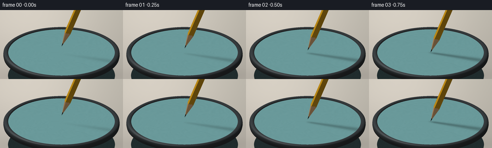
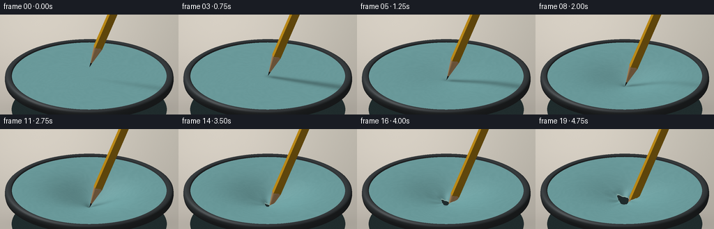

CODING AGENTS AS PIXEL WORLD MODELS
traex/GPT-6.1-Sol · mechanics_0031
点击播放 · 原生 RGB 像素
逐轮保存的候选
回放视频、检查图与代码变化。
每份候选均可单独播放。实际图片检查记录在下方工具轨迹中。
候选 01播放与检查图
点击播放 · 原生 RGB 像素


展开代码变化
--- 上一保存版本
+++ 本次保存版本
@@ -0,0 +1,239 @@
+import json
+from pathlib import Path
+import numpy as np
+from PIL import Image, ImageFilter
+import artifact_io
+
+ROOT=Path(__file__).resolve().parent
+SPEC=json.loads((ROOT/'task_spec.json').read_text())
+W,H=SPEC['width'],SPEC['height']
+SS=3
+SW,SH=W*SS,H*SS
+S=70.*SS
+C=.44
+SN=np.sqrt(1-C*C)
+LIGHT=np.array([-0.50,-0.36,0.79]); LIGHT/=np.linalg.norm(LIGHT)
+VIEW=np.array([0.,SN,C])
+R=1.59
+rng=np.random.default_rng(140)
+noise=rng.normal(0,.35,(SH,SW))
+
+def project(v):
+ return np.stack([128*SS+v[:,0]*S,89*SS+S*(C*v[:,1]-SN*v[:,2]),SN*v[:,1]+C*v[:,2]],axis=-1)
+
+def shade(v,n,base,kind='sheet',extra=None):
+ n=n/(np.linalg.norm(n,axis=1,keepdims=True)+1e-10)
+ diffuse=np.maximum(n@LIGHT,0)
+ half=(LIGHT+VIEW); half/=np.linalg.norm(half)
+ spec=np.maximum(n@half,0)
+ if kind=='metal':
+ illumination=.32+.54*diffuse
+ col=np.asarray(base)[None,:]*illumination[:,None]+(spec**38)[:,None]*125
+ col+=(np.maximum(n@VIEW,0)**7)[:,None]*8
+ elif kind=='wood':
+ illumination=.53+.47*diffuse
+ grain=3*np.sin(v[:,2]*83+np.sin(v[:,0]*142)*2)+1.5*np.sin(v[:,2]*174+v[:,1]*90)
+ col=np.asarray(base)[None,:]*illumination[:,None]+grain[:,None]+(spec**28)[:,None]*9
+ elif kind=='paint':
+ illumination=.40+.60*diffuse
+ grain=1.3*np.sin(v[:,2]*96+v[:,0]*133)
+ col=np.asarray(base)[None,:]*illumination[:,None]+grain[:,None]+(spec**52)[:,None]*45
+ elif kind=='graphite':
+ col=np.asarray(base)[None,:]*(.36+.65*diffuse[:,None])+(spec**22)[:,None]*44
+ else:
+ illumination=.53+.47*diffuse
+ col=np.asarray(base)[None,:]*illumination[:,None]+(spec**18)[:,None]*20
+ # Extremely fine, stationary stippling of matte natural rubber.
+ texture=1.2*np.sin(v[:,0]*215+np.sin(v[:,1]*180))+0.7*np.cos(v[:,1]*297+v[:,0]*90)
+ col+=texture[:,None]
+ if extra is not None: col=extra(col)
+ return np.clip(col,0,255)
+
+class Raster:
+ def __init__(self):
+ yy,xx=np.mgrid[0:SH,0:SW]; x=xx/SW; y=yy/SH
+ light=np.exp(-((x-.22)**2/.5+(y-.14)**2/.85))
+ bg=np.stack([177+39*light-10*y,173+36*light-11*y,162+35*light-9*y],-1)
+ # Soft tabletop shadows below the stretching jig.
+ ell=((xx-133*SS)/(113*SS))**2+((yy-135*SS)/(15*SS))**2
+ bg-=np.exp(-ell*1.8)[:,:,None]*29
+ self.im=bg.astype(float)
+ self.depth=np.full((SH,SW),-1e9)
+ def mesh(self,verts,faces,colors):
+ p=project(verts)
+ for face in faces:
+ q=p[face]; color=colors[face]
+ x0=max(0,int(np.floor(q[:,0].min()))); x1=min(SW-1,int(np.ceil(q[:,0].max())))
+ y0=max(0,int(np.floor(q[:,1].min()))); y1=min(SH-1,int(np.ceil(q[:,1].max())))
+ if x1<x0 or y1<y0: continue
+ den=(q[1,1]-q[2,1])*(q[0,0]-q[2,0])+(q[2,0]-q[1,0])*(q[0,1]-q[2,1])
+ if abs(den)<1e-8: continue
+ yy,xx=np.mgrid[y0:y1+1,x0:x1+1]
+ a=((q[1,1]-q[2,1])*(xx+.5-q[2,0])+(q[2,0]-q[1,0])*(yy+.5-q[2,1]))/den
+ b=((q[2,1]-q[0,1])*(xx+.5-q[2,0])+(q[0,0]-q[2,0])*(yy+.5-q[2,1]))/den
+ c=1-a-b
+ depth=a*q[0,2]+b*q[1,2]+c*q[2,2]
+ mask=(a>=-1e-6)&(b>=-1e-6)&(c>=-1e-6)&(depth>self.depth[y0:y1+1,x0:x1+1])
+ if not np.any(mask): continue
+ out=a[:,:,None]*color[0]+b[:,:,None]*color[1]+c[:,:,None]*color[2]
+ self.im[y0:y1+1,x0:x1+1][mask]=out[mask]
+ self.depth[y0:y1+1,x0:x1+1][mask]=depth[mask]
+
+def gridfaces(rows,cols):
+ faces=[]
+ for i in range(rows-1):
+ for j in range(cols):
+ k=(j+1)%cols
+ faces.extend([(i*cols+j,i*cols+k,(i+1)*cols+j),(i*cols+k,(i+1)*cols+k,(i+1)*cols+j)])
+ return np.array(faces)
+
+N=128
+TH=np.arange(N)*2*np.pi/N
+# Machined circular stretching frame, with rounded edges and a small front depth.
+ring_profiles=[(1.585,-.025),(1.586,.012),(1.615,.030),(1.690,.025),(1.724,-.002),(1.731,-.07),(1.717,-.14),(1.65,-.16)]
+ringv=[]; ringn=[]
+for k,(rr,z) in enumerate(ring_profiles):
+ prev=ring_profiles[max(0,k-1)]; nxt=ring_profiles[min(len(ring_profiles)-1,k+1)]
+ dr=nxt[0]-prev[0]; dz=nxt[1]-prev[1]
+ norm=np.array([-dz,dr]); norm/=np.linalg.norm(norm)
+ if k==0: norm=np.array([-.65,.76])
+ for theta in TH:
+ ringv.append([rr*np.cos(theta),rr*np.sin(theta),z])
+ ringn.append([norm[0]*np.cos(theta),norm[0]*np.sin(theta),norm[1]])
+ringv=np.array(ringv);ringn=np.array(ringn)
+ringcol=shade(ringv,ringn,[69,75,78],'metal')
+ringfaces=gridfaces(len(ring_profiles),N)
+
+AX=np.array([.43,-.21,1.]); AX/=np.linalg.norm(AX)
+B1=np.cross(AX,[0,1,0]); B1/=np.linalg.norm(B1)
+B2=np.cross(AX,B1)
+
+# Dimple stretches over a wide area, with a narrow point at the contact.
+def membrane_z(x,y,d,tear):
+ r=np.sqrt(x*x+y*y)
+ broad=np.exp(-r*r/(2*.49**2))
+ pinch=np.exp(-r/.12)
+ z=-d*(.79*broad+.21*pinch)*(1-(r/R)**8)
+ if tear>0:
+ theta=np.arctan2(y,x)
+ z-=.023*tear*np.sin(3*theta+.4)**2*np.exp(-((r-.23)/.16)**2)
+ # Three shallow stress creases radiate from the rupture.
+ z-=.010*tear*(np.maximum(np.cos(3*theta+.5),0)**20)*np.exp(-r/.52)
+ return z
+
+def sheet(rast,d,tear,pencil_tip):
+ rows=44
+ ang=TH
+ # The rupture opens in three ragged lobes rather than a neat drilled circle.
+ peak=(.5+.5*np.cos(3*ang+.5))**5
+ inner=(.012+.22*tear)*(.58+.42*peak)*(1+.06*np.sin(11*ang+.8)) if tear>0 else np.full(N,.0002)
+ u=np.linspace(0,1,rows)**1.30
+ radii=inner[None,:]+(R-inner[None,:])*u[:,None]
+ x=radii*np.cos(ang); y=radii*np.sin(ang)
+ z=membrane_z(x,y,d,tear)
+ if tear>0:
+ curl=.026*tear*np.sin(3*ang+.5)*np.exp(-u[:,None]*24)
+ z+=curl
+ verts=np.stack([x,y,z],-1).reshape(-1,3)
+ eps=.0007
+ dzdx=(membrane_z(x+eps,y,d,tear)-membrane_z(x-eps,y,d,tear))/(2*eps)
+ dzdy=(membrane_z(x,y+eps,d,tear)-membrane_z(x,y-eps,d,tear))/(2*eps)
+ normals=np.stack([-dzdx,-dzdy,np.ones_like(x)],-1).reshape(-1,3)
+ def modifier(col):
+ # Soft physically directed shadow from the hovering yellow shaft.
+ vx,vy,vz=verts.T
+ s=np.clip((vx*.95+vy*.36)/1.06,0,1.7)
+ line_x=.99*s+.40*(pencil_tip-vz)
+ line_y=.34*s+.52*(pencil_tip-vz)
+ dist=(vx-line_x)**2+(vy-line_y)**2
+ width=.04+.032*s
+ sh=np.exp(-dist/(2*width**2))*.26
+ sh*=np.clip((s+.08)*5,0,1)
+ col*=1-sh[:,None]
+ if tear>0:
+ rim=np.broadcast_to(np.exp(-u[:,None]*120), (rows,N)).reshape(-1)*tear
+ col=col*(1-rim[:,None]*.30)+np.array([191,214,206])*rim[:,None]*.30
+ stress=(np.maximum(np.cos(3*np.tile(ang,rows)+.5),0)**22)*np.exp(-radii.reshape(-1)/.47)*tear
+ col+=stress[:,None]*4
+ return col
+ colors=shade(verts,normals,[116,169,170],extra=modifier)
+ rast.mesh(verts,gridfaces(rows,N),colors)
+ if tear>0:
+ # Freshly torn pale rubber thickness at the irregular perimeter.
+ edge=verts[:N].copy(); under=edge.copy();under[:,2]-=.018
+ e=np.concatenate([edge,under])
+ n=np.tile([0,0,1.],(len(e),1))
+ co=shade(e,n,[153,188,180])
+ rast.mesh(e,gridfaces(2,N),co)
+
+def pencil(rast,tip):
+ origin=np.array([0.,0.,tip])
+ # Six painted cedar facets end at a scalloped sharpened shoulder.
+ phases=np.arange(6)*np.pi/3+.18
+ radial=np.array([np.cos(a)*B1+np.sin(a)*B2 for a in phases])
+ shoulder=np.array([.47,.435,.485,.45,.48,.44])
+ paint_base=np.array([237,174,30])
+ for j in range(6):
+ k=(j+1)%6
+ norm=(radial[j]+radial[k]);norm/=np.linalg.norm(norm)
+ levels=np.linspace(0,1,13)
+ vv=[]
+ for u in levels:
+ for ind in [j,k]:
+ l=shoulder[ind]*(1-u)+2.55*u
+ vv.append(origin+AX*l+radial[ind]*.096)
+ vv=np.array(vv)
+ faces=[]
+ for i in range(len(levels)-1):
+ faces.extend([(2*i,2*i+1,2*i+2),(2*i+1,2*i+3,2*i+2)])
+ co=shade(vv,np.tile(norm,(len(vv),1)),paint_base,'paint')
+ rast.mesh(vv,np.array(faces),co)
+ # Sharpened cone: cedar grain, graphite core, and a small uneven paint boundary.
+ sections=72
+ angles=np.linspace(0,2*np.pi,sections,endpoint=False)+.18
+ for j,a in enumerate(angles):
+ b=angles[(j+1)%sections]
+ ra=np.cos(a)*B1+np.sin(a)*B2; rb=np.cos(b)*B1+np.sin(b)*B2
+ # Intersect the cone with the hexagonal barrel.
+ def hexrad(t):
+ return .096*np.cos(np.pi/6)/np.cos(((t-.18)%(np.pi/3))-np.pi/6)
+ rad_a=hexrad(a);rad_b=hexrad(b)
+ sa=.461+.024*np.cos(a*3+.7);sb=.461+.024*np.cos(b*3+.7)
+ va=origin+AX*sa+ra*rad_a;vb=origin+AX*sb+rb*rad_b
+ ga=origin+AX*.105+ra*.018;gb=origin+AX*.105+rb*.018
+ vv=np.array([ga,gb,va,vb])
+ n=(ra+rb);n/=np.linalg.norm(n);n=(n-AX*.20);n/=np.linalg.norm(n)
+ co=shade(vv,np.tile(n,(4,1)),[197,154,106],'wood')
+ rast.mesh(vv,np.array([[0,1,2],[1,3,2]]),co)
+ vv=np.array([origin+AX*.005,ga,gb]);ng=ra+rb-AX*.22
+ co=shade(vv,np.tile(ng,(3,1)),[43,44,44],'graphite')
+ rast.mesh(vv,np.array([[0,1,2]]),co)
+
+frames=[]
+for i in range(SPEC['frames']):
+ t=i/(SPEC['frames']-1)
+ # Contact, sustained stretch, slow puncture, and final penetration.
+ if i<=3:
+ tip=.20*(1-i/3);d=0.;tear=0.
+ elif i<=12:
+ q=(i-3)/9
+ d=.015+.43*q**1.10;tip=-d;tear=0.
+ else:
+ q=(i-12)/7
+ tear=q**.85
+ d=.445-.20*(q**.65)
+ tip=-.445-.20*q
+ rast=Raster()
+ # Dark cavity beneath the rubber becomes visible only through the tear.
+ cv=np.array([[0,0,-.76]]+[[R*np.cos(a),R*np.sin(a),-.76] for a in TH])
+ cf=np.array([[0,j+1,(j+1)%N+1] for j in range(N)])
+ cc=np.tile([32,44,45.],(N+1,1))
+ rast.mesh(cv,cf,cc)
+ rast.mesh(ringv,ringfaces,ringcol)
+ sheet(rast,d,tear,tip)
+ pencil(rast,tip)
+ out=np.clip(rast.im+noise[:,:,None],0,255).astype(np.uint8)
+ img=Image.fromarray(out).resize((W,H),Image.Resampling.LANCZOS)
+ frames.append(np.asarray(img))
+ print(f'Frame {i+1}/{SPEC["frames"]}',flush=True)
+artifact_io.save(np.stack(frames),ROOT)
可观测工具轨迹
实际执行的命令与返回图片。
命令 1exit 0
/bin/bash -lc 'ls -la && cat prompt.txt && cat GENERATION_RULES.md && cat task_spec.json'
命令 2exit 0
/bin/bash -lc 'cat artifact_io.py'
命令 3exit 1
/bin/bash -lc "cat > generate.py <<'PY'
import json
from pathlib import Path
import numpy as np
from PIL import Image, ImageFilter
import artifact_io
ROOT=Path(__file__).resolve().parent
SPEC=json.loads((ROOT/'task_spec.json').read_text())
W,H=SPEC['width'],SPEC['height']
SS=3
SW,SH=W*SS,H*SS
S=70.*SS
C=.44
SN=np.sqrt(1-C*C)
LIGHT=np.array([-0.50,-0.36,0.79]); LIGHT/=np.linalg.norm(LIGHT)
VIEW=np.array([0.,SN,C])
R=1.59
rng=np.random.default_rng(140)
noise=rng.normal(0,.35,(SH,SW))
def project(v):
return np.stack([128*SS+v[:,0]*S,89*SS+S*(C*v[:,1]-SN*v[:,2]),SN*v[:,1]+C*v[:,2]],axis=-1)
def shade(v,n,base,kind='sheet',extra=None):
n=n/(np.linalg.norm(n,axis=1,keepdims=True)+1e-10)
diffuse=np.maximum(n@LIGHT,0)
half=(LIGHT+VIEW); half/=np.linalg.norm(half)
spec=np.maximum(n@half,0)
if kind=='metal':
illumination=.32+.54*diffuse
col=np.asarray(base)[None,:]*illumination[:,None]+(spec**38)[:,None]*125
col+=(np.maximum(n@VIEW,0)**7)[:,None]*8
elif kind=='wood':
illumination=.53+.47*diffuse
grain=3*np.sin(v[:,2]*83+np.sin(v[:,0]*142)*2)+1.5*np.sin(v[:,2]*174+v[:,1]*90)
col=np.asarray(base)[None,:]*illumination[:,None]+grain[:,None]+(spec**28)[:,None]*9
elif kind=='paint':
illumination=.40+.60*diffuse
grain=1.3*np.sin(v[:,2]*96+v[:,0]*133)
col=np.asarray(base)[None,:]*illumination[:,None]+grain[:,None]+(spec**52)[:,None]*45
elif kind=='graphite':
col=np.asarray(base)[None,:]*(.36+.65*diffuse[:,None])+(spec**22)[:,None]*44
else:
illumination=.53+.47*diffuse
col=np.asarray(base)[None,:]*illumination[:,None]+(spec**18)[:,None]*20
# Extremely fine, stationary stippling of matte natural rubber.
texture=1.2*np.sin(v[:,0]*215+np.sin(v[:,1]*180))+0.7*np.cos(v[:,1]*297+v[:,0]*90)
col+=texture[:,None]
if extra is not None: col=extra(col)
return np.clip(col,0,255)
class Raster:
def __init__(self):
yy,xx=np.mgrid[0:SH,0:SW]; x=xx/SW; y=yy/SH
light=np.exp(-((x-.22)**2/.5+(y-.14)**2/.85))
bg=np.stack([177+39*light-10*y,173+36*light-11*y,162+35*light-9*y],-1)
# Soft tabletop shadows below the stretching jig.
ell=((xx-133*SS)/(113*SS))**2+((yy-135*SS)/(15*SS))**2
bg-=np.exp(-ell*1.8)[:,:,None]*29
self.im=bg.astype(float)
self.depth=np.full((SH,SW),-1e9)
def mesh(self,verts,faces,colors):
p=project(verts)
for face in faces:
q=p[face]; color=colors[face]
x0=max(0,int(np.floor(q[:,0].min()))); x1=min(SW-1,int(np.ceil(q[:,0].max())))
y0=max(0,int(np.floor(q[:,1].min()))); y1=min(SH-1,int(np.ceil(q[:,1].max())))
if x1<x0 or y1<y0: continue
den=(q[1,1]-q[2,1])*(q[0,0]-q[2,0])+(q[2,0]-q[1,0])*(q[0,1]-q[2,1])
if abs(den)<1e-8: continue
yy,xx=np.mgrid[y0:y1+1,x0:x1+1]
a=((q[1,1]-q[2,1])*(xx+.5-q[2,0])+(q[2,0]-q[1,0])*(yy+.5-q[2,1]))/den
b=((q[2,1]-q[0,1])*(xx+.5-q[2,0])+(q[0,0]-q[2,0])*(yy+.5-q[2,1]))/den
c=1-a-b
depth=a*q[0,2]+b*q[1,2]+c*q[2,2]
mask=(a>=-1e-6)&(b>=-1e-6)&(c>=-1e-6)&(depth>self.depth[y0:y1+1,x0:x1+1])
if not np.any(mask): continue
out=a[:,:,None]*color[0]+b[:,:,None]*color[1]+c[:,:,None]*color[2]
self.im[y0:y1+1,x0:x1+1][mask]=out[mask]
self.depth[y0:y1+1,x0:x1+1][mask]=depth[mask]
def gridfaces(rows,cols):
faces=[]
for i in range(rows-1):
for j in range(cols):
k=(j+1)%cols
faces.extend([(i*cols+j,i*cols+k,(i+1)*cols+j),(i*cols+k,(i+1)*cols+k,(i+1)*cols+j)])
return np.array(faces)
N=128
TH=np.arange(N)*2*np.pi/N
# Machined circular stretching frame, with rounded edges and a small front depth.
ring_profiles=[(1.585,-.025),(1.586,.012),(1.615,.030),(1.690,.025),(1.724,-.002),(1.731,-.07),(1.717,-.14),(1.65,-.16)]
ringv=[]; ringn=[]
for k,(rr,z) in enumerate(ring_profiles):
prev=ring_profiles[max(0,k-1)]; nxt=ring_profiles[min(len(ring_profiles)-1,k+1)]
dr=nxt[0]-prev[0]; dz=nxt[1]-prev[1]
norm=np.array([-dz,dr]); norm/=np.linalg.norm(norm)
if k==0: norm=np.array([-.65,.76])
for theta in TH:
ringv.append([rr*np.cos(theta),rr*np.sin(theta),z])
ringn.append([norm[0]*np.cos(theta),norm[0]*np.sin(theta),norm[1]])
ringv=np.array(ringv);ringn=np.array(ringn)
ringcol=shade(ringv,ringn,[69,75,78],'metal')
ringfaces=gridfaces(len(ring_profiles),N)
AX=np.array([.43,-.21,1.]); AX/=np.linalg.norm(AX)
B1=np.cross(AX,[0,1,0]); B1/=np.linalg.norm(B1)
B2=np.cross(AX,B1)
# Dimple stretches over a wide area, with a narrow point at the contact.
def membrane_z(x,y,d,tear):
r=np.sqrt(x*x+y*y)
broad=np.exp(-r*r/(2*.49**2))
pinch=np.exp(-r/.12)
z=-d*(.79*broad+.21*pinch)*(1-(r/R)**8)
if tear>0:
theta=np.arctan2(y,x)
z-=.023*tear*np.sin(3*theta+.4)**2*np.exp(-((r-.23)/.16)**2)
# Three shallow stress creases radiate from the rupture.
z-=.010*tear*(np.maximum(np.cos(3*theta+.5),0)**20)*np.exp(-r/.52)
return z
def sheet(rast,d,tear,pencil_tip):
rows=44
ang=TH
# The rupture opens in three ragged lobes rather than a neat drilled circle.
peak=(.5+.5*np.cos(3*ang+.5))**5
inner=(.012+.22*tear)*(.58+.42*peak)*(1+.06*np.sin(11*ang+.8)) if tear>0 else np.full(N,.0002)
u=np.linspace(0,1,rows)**1.30
radii=inner[None,:]+(R-inner[None,:])*u[:,None]
x=radii*np.cos(ang); y=radii*np.sin(ang)
z=membrane_z(x,y,d,tear)
if tear>0:
curl=.026*tear*np.sin(3*ang+.5)*np.exp(-u[:,None]*24)
z+=curl
verts=np.stack([x,y,z],-1).reshape(-1,3)
eps=.0007
dzdx=(membrane_z(x+eps,y,d,tear)-membrane_z(x-eps,y,d,tear))/(2*eps)
dzdy=(membrane_z(x,y+eps,d,tear)-membrane_z(x,y-eps,d,tear))/(2*eps)
normals=np.stack([-dzdx,-dzdy,np.ones_like(x)],-1).reshape(-1,3)
def modifier(col):
# Soft physically directed shadow from the hovering yellow shaft.
vx,vy,vz=verts.T
s=np.clip((vx*.95+vy*.36)/1.06,0,1.7)
line_x=.99*s+.40*(pencil_tip-vz)
line_y=.34*s+.52*(pencil_tip-vz)
dist=(vx-line_x)**2+(vy-line_y)**2
width=.04+.032*s
sh=np.exp(-dist/(2*width**2))*.26
sh*=np.clip((s+.08)*5,0,1)
col*=1-sh[:,None]
if tear>0:
rim=np.exp(-u[:,None]*120).reshape(-1)*tear
col=col*(1-rim[:,None]*.30)+np.array([191,214,206])*rim[:,None]*.30
stress=(np.maximum(np.cos(3*np.tile(ang,rows)+.5),0)**22)*np.exp(-radii.reshape(-1)/.47)*tear
col+=stress[:,None]*4
return col
colors=shade(verts,normals,[116,169,170],extra=modifier)
rast.mesh(verts,gridfaces(rows,N),colors)
if tear>0:
# Freshly torn pale rubber thickness at the irregular perimeter.
edge=verts[:N].copy(); under=edge.copy();under[:,2]-=.018
e=np.concatenate([edge,under])
n=np.tile([0,0,1.],(len(e),1))
co=shade(e,n,[153,188,180])
rast.mesh(e,gridfaces(2,N),co)
def pencil(rast,tip):
origin=np.array([0.,0.,tip])
# Six painted cedar facets end at a scalloped sharpened shoulder.
phases=np.arange(6)*np.pi/3+.18
radial=np.array([np.cos(a)*B1+np.sin(a)*B2 for a in phases])
shoulder=np.array([.47,.435,.485,.45,.48,.44])
paint_base=np.array([237,174,30])
for j in range(6):
k=(j+1)%6
norm=(radial[j]+radial[k]);norm/=np.linalg.norm(norm)
levels=np.linspace(0,1,13)
vv=[]
for u in levels:
for ind in [j,k]:
l=shoulder[ind]*(1-u)+2.55*u
vv.append(origin+AX*l+radial[ind]*.096)
vv=np.array(vv)
faces=[]
for i in range(len(levels)-1):
faces.extend([(2*i,2*i+1,2*i+2),(2*i+1,2*i+3,2*i+2)])
co=shade(vv,np.tile(norm,(len(vv),1)),paint_base,'paint')
rast.mesh(vv,np.array(faces),co)
# Sharpened cone: cedar grain, graphite core, and a small uneven paint boundary.
sections=72
angles=np.linspace(0,2*np.pi,sections,endpoint=False)+.18
for j,a in enumerate(angles):
b=angles[(j+1)%sections]
ra=np.cos(a)*B1+np.sin(a)*B2; rb=np.cos(b)*B1+np.sin(b)*B2
# Intersect the cone with the hexagonal barrel.
def hexrad(t):
return .096*np.cos(np.pi/6)/np.cos(((t-.18)%(np.pi/3))-np.pi/6)
rad_a=hexrad(a);rad_b=hexrad(b)
sa=.461+.024*np.cos(a*3+.7);sb=.461+.024*np.cos(b*3+.7)
va=origin+AX*sa+ra*rad_a;vb=origin+AX*sb+rb*rad_b
ga=origin+AX*.105+ra*.018;gb=origin+AX*.105+rb*.018
vv=np.array([ga,gb,va,vb])
n=(ra+rb);n/=np.linalg.norm(n);n=(n-AX*.20);n/=np.linalg.norm(n)
co=shade(vv,np.tile(n,(4,1)),[197,154,106],'wood')
rast.mesh(vv,np.array([[0,1,2],[1,3,2]]),co)
vv=np.array([origin+AX*.005,ga,gb]);ng=ra+rb-AX*.22
co=shade(vv,np.tile(ng,(3,1)),[43,44,44],'graphite')
rast.mesh(vv,np.array([[0,1,2]]),co)
frames=[]
for i in range(SPEC['frames']):
t=i/(SPEC['frames']-1)
# Contact, sustained stretch, slow puncture, and final penetration.
if i<=3:
tip=.20*(1-i/3);d=0.;tear=0.
elif i<=12:
q=(i-3)/9
d=.015+.43*q**1.10;tip=-d;tear=0.
else:
q=(i-12)/7
tear=q**.85
d=.445-.20*(q**.65)
tip=-.445-.20*q
rast=Raster()
# Dark cavity beneath the rubber becomes visible only through the tear.
cv=np.array([[0,0,-.76]]+[[R*np.cos(a),R*np.sin(a),-.76] for a in TH])
cf=np.array([[0,j+1,(j+1)%N+1] for j in range(N)])
cc=np.tile([32,44,45.],(N+1,1))
rast.mesh(cv,cf,cc)
rast.mesh(ringv,ringfaces,ringcol)
sheet(rast,d,tear,tip)
pencil(rast,tip)
out=np.clip(rast.im+noise[:,:,None],0,255).astype(np.uint8)
img=Image.fromarray(out).resize((W,H),Image.Resampling.LANCZOS)
frames.append(np.asarray(img))
print(f'Frame {i+1}/{SPEC[\"frames\"]}',flush=True)
artifact_io.save(np.stack(frames),ROOT)
PY
python generate.py"命令 4exit 0
/bin/bash -lc "python - <<'PY'
p='generate.py'
s=open(p).read().replace('rim=np.exp(-u[:,None]*120).reshape(-1)*tear','rim=np.broadcast_to(np.exp(-u[:,None]*120), (rows,N)).reshape(-1)*tear')
open(p,'w').write(s)
PY
python generate.py"命令 5exit 1
/bin/bash -lc "command -v ffmpeg && ls -lh pixels.npz index.html inspection.png && python - <<'PY'
import numpy as np
z=np.load('pixels.npz')['pixels']
print('Packed RGB tensor:',z.shape,z.dtype)
PY"命令 6exit 0
/bin/bash -lc "ls -lh pixels.npz index.html inspection.png generate.py && python - <<'PY'
import numpy as np
from pathlib import Path
z=np.load('pixels.npz')['pixels']
assert z.shape==(144,256,20)
assert len(list(Path('frames').glob('*.png')))==20
print('Verified: 20 RGB frames, 256Ã144, 4 fps.')
PY"视觉工具实际返回图片 1

保存候选 1 份；完成命令 6 次；可验证图片返回 1 张。原始 API 响应与完整日志保留在本地。